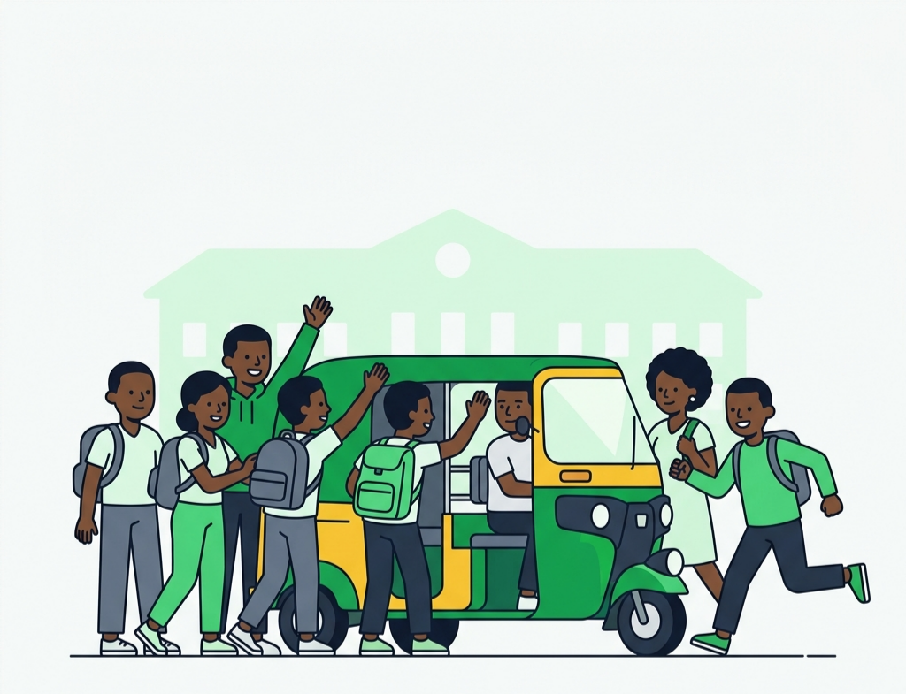
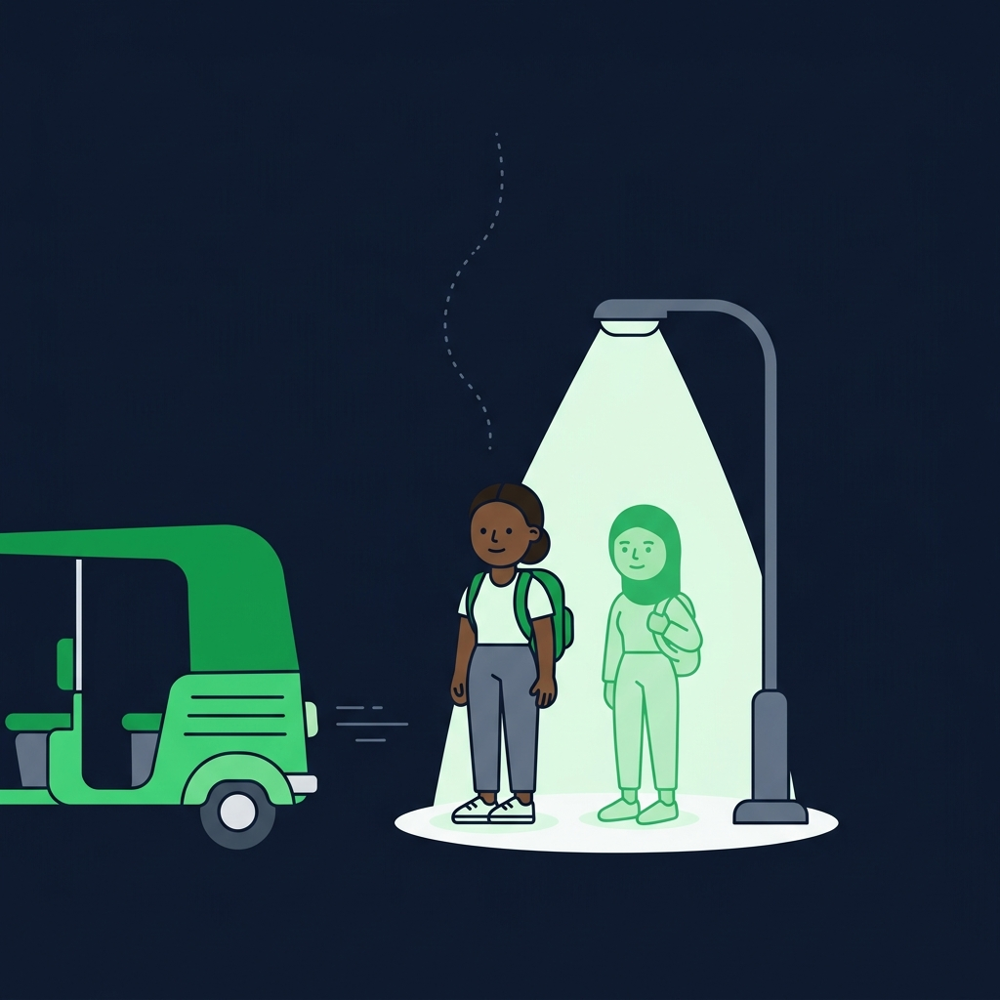
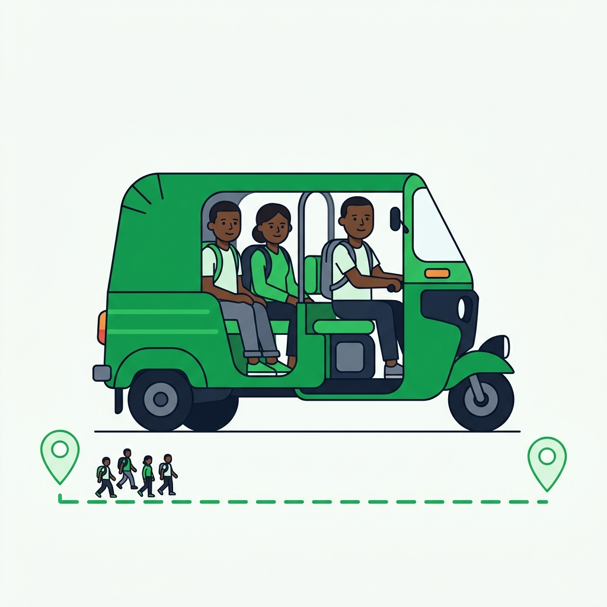
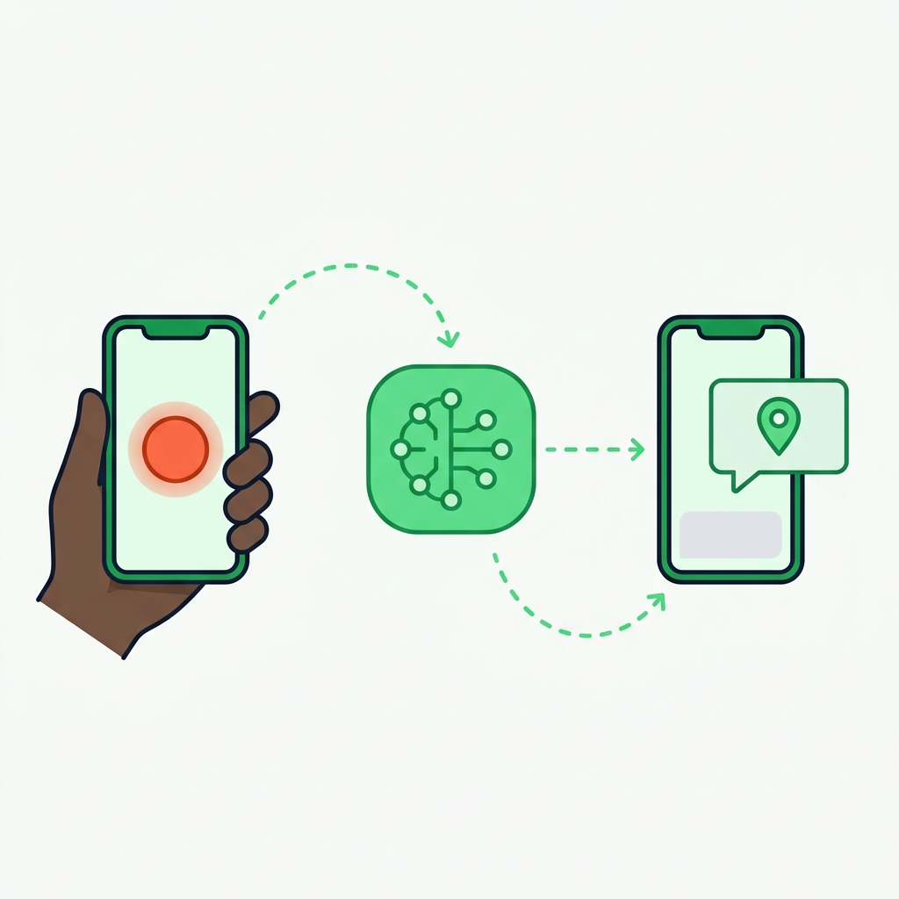
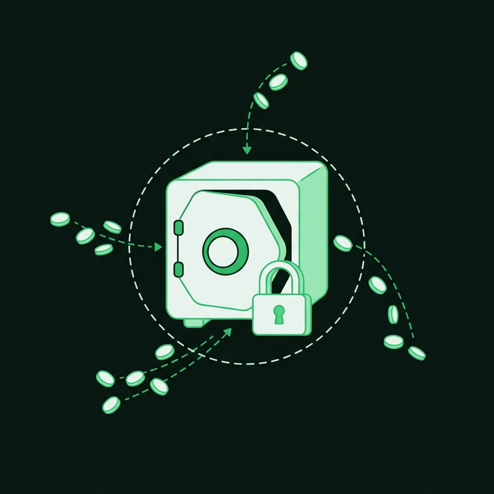
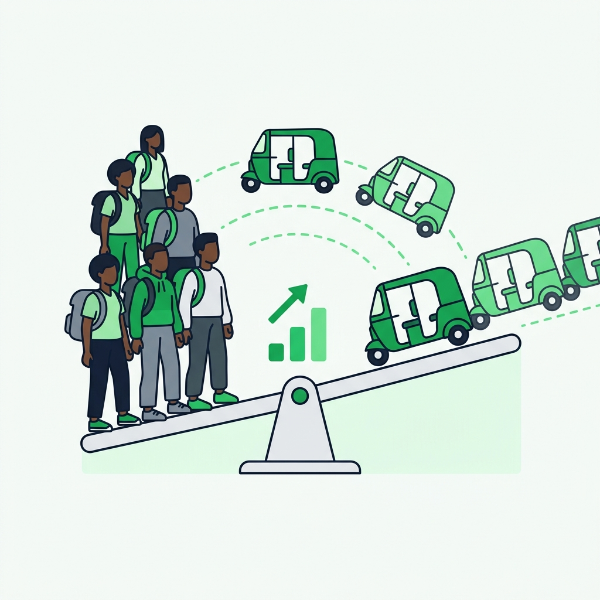
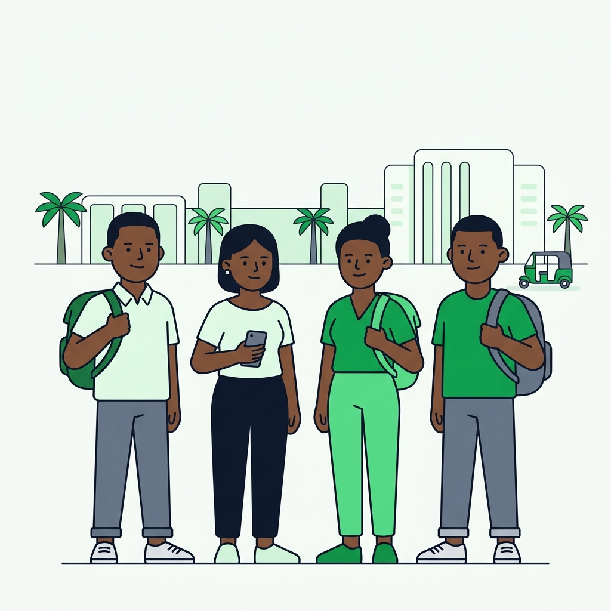

Safe campus rides. Powered by AI + Solana.
33 mapped stops · real coordinates
Everyone floods the same junction. Fares jump when it rains or after dark. Pure haggling.
Off-peak, drivers circle burning fuel with empty seats — then overcharge to make it back.

You board a keke you've never seen, alone at night. No one knows which one — no fast line to security.
No receipts, no ratings, no record. The SUG can't hold a driver accountable for a trip that produced no data.

Building to building, shared seats, live-tracked from booking.
Live position on a fixed route. A ping when it nears your stop.
Naira in, USDC on Solana underneath. Fixed price, every time.
One-tap SOS → AI triage → SUG Security on Telegram, in seconds.
We didn't copy Uber. We modelled how FUTO kekes already move.
Four seats, pooled when riders share the same pickup and destination. ₦150 flat.
No dispatch, no booking. Live position on the route, ETA to every stop.
Scan the driver's QR at your stop. No trip starts until payment clears.

Exact location, ride ID, driver and plate — from any screen in the app.
Gemini weighs time, route deviation and context — filters false alarms. If it fails, defaults to critical and still sends help.
Into SUG Security's Telegram, with a live map link. Not an alarm — exact coordinates, on their phones.

The student never sees crypto. They pay naira, like always.
An ordinary bank transfer to a virtual account. Nothing new to learn.
Our provider takes the naira and settles USDC on Solana into the treasury.
A verified callback confirms the money landed. The ride opens.
Earnings batch into a ledger, then cash out — bank or on-chain USDC.
A program-owned vault holds it. Not a person.
Every fare sends 5% into a PDA vault — a welfare fund built from rides already happening.
Three instructions — initialize, contribute, payout. Authority-signed, hard-capped in the contract.
Every contribution is a public transaction. A driver verifies the fund without trusting us.

The fund isn't a balance to admire. It's insurance that pays out.
A repair he can't afford costs a day of income. No driver has cover.
A claim filed from his phone. No forms, no branch visit, no broker.
The same SOS-filtering AI assesses the photo and flags fraud.
Straight to his wallet, out of the fund his own rides built.
Into the on-chain treasury. Driver keeps 95%. Payouts batch so bank fees never eat a ₦150 fare.
When demand spikes, riders add a skip-the-queue tip. Half is a driver bonus that pulls more kekes onto the road.
Campus kekes are SUG-run — captive driver supply and student trust from day one.

Every stop on our map is one we've waited at. Those 33 coordinates were walked, not scraped.
React Native · Fastify · Firebase · an Anchor program on Solana · Gemini · Alerta.
Every campus trip — visible, paid on Solana, and safe.
